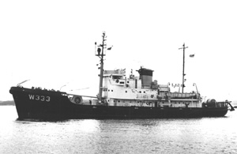

|  copyright - WHOI |
|
In 1944, as the Murray, this ship struck a mine and sank.
The vessel was raised by the Navy, repaired, renamed Trapper, and
used as an auxiliary mine layer. In 1955, the vessel was transferred
to the Coast Guard for use as a cable ship and renamed Yamacraw
(WARC 333).
WHOI leased Yamacraw during 1957-1958 and made 11 cruises in the
North Atlantic and Mediterranean with the vessel.. Yamacraw
was used mainly for geophysical work and towing the thermistor chain shown
on the after deck. WHOI returned the vessel to the Navy in 1959 and
in 1969 Yamacraw was sold for scrap.